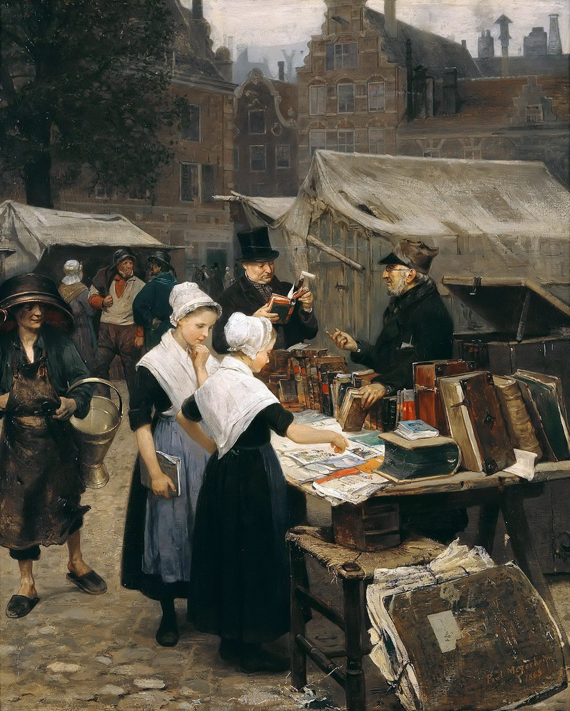

Разговор о том, как формировалось мое гуманитарное мировоззрение начну с детства. Не с самого раннего, потому что особой тяги к такого рода знаниям и, в частности, к книгам лет до 12-13 я за собой не помню. Разве что, пару эпизодов. На 6-летие мама подарила мне роскошное даже по нынешним временам издание “Винни-Пух и все-все-все”. Очень большую, красивую книгу, в суперобложке. Я нашел ее в тот день утром под подушкой. Это, наверно, до сих пор непревзойденный подарок ко дню рождения за всю мою жизнь. Папа же читал мне вслух примерно в то же время “Робинзона Крузо”. Книга тоже была необычной, хотя и с обратным знаком: роскошной ее назвать никак было нельзя. Отцу ее подарили за какие-то успехи, когда он учился в школе, еще в начале 50-х (об этом свидетельствовала размашистая чернильная надпись на форзаце). Книга была очень потрепанная, почти развалившаяся. Помню из нее иллюстрацию, где главный герой заходит в темную пещеру и обнаруживает там умирающего козла. “Смотри, как оба испугались, у Робинзона даже волосы на голове дыбом встали!”, - комментировал папа, который, видимо, сам не прочь был перечитать любимое литературное произведение.
Потом, в связи с разводом родителей, было несколько безрадостных лет, почти не оставивших впечатлений, по крайней мере книжных. Тем не менее, книги всегда водились в достаточном количестве и в нашей семье, и в семьях наших родственников и знакомых, хотя наличие книг было, чаще всего, лишь данью традиции, моде и государственной идеологии, в соответствии с которой советские люди просто не могли не быть самыми читающими в мире. Типичная домашняя библиотека представляла собой 3-5 специальных книжных полок (до смешного повсеместно одинаковой конструкции), или полок в серванте, а позднее - в “стенке”. Подбор тоже был довольно единообразен: русская и советская классика, военная проза, пара толстых словарей, случайно где-то “отхваченные” собрания сочинений авторов довольно неожиданных (например, Лескова). У имевших “блат” книжные полки дополнительно были украшены иллюстрированными энциклопедиями большого формата, или даже Большой советской, альбомами по искусству, детективами, фантастикой.
Из доступных мне полноценная домашняя библиотека была лишь в семье моего школьного друга Мишки, с которым я познакомился в 7-м классе. С этого времени, наверно, и началось пробуждение моего интереса к печатному слову и к культуре вообще. В библиотеке мишкиных родителей (а точнее бабушек и дедушек) были и полные собрания сочинений кумиров тогдашней читающей публики Жюля Верна, Майн Рида, Стивенсона, Дефо, Фенимора Купера, и едва ли не вся изданная в советское время классика, как отечественная, так и зарубежная, и всемозможные словари, справочники и энциклопедии, и даже раздел дореволюционных раритетов. Расставлено всё это было не в стандартной “стенке”, а в настоящих застекленных книжных шкафах от пола до потолка да еще, кажется, и не в одной комнате.
Книги Мишка, с разрешения родителей, охотно давал почитать школьным друзьям. Особенный спрос был на романы Дюма. Но я знаменитыми произведениями приключенческого жанра всерьез начал знакомиться совсем недавно, когда стал приобщать к чтению уже своего сына. В детстве книги о путешествиях и приключениях оставляли меня совершенно равнодушным, несмотря на творившийся вокруг них ажиотаж. Единственное, что одолел тогда с удовольствием - романы “Капитан Немо” и “Таинственный остров” Жюля Верна, да еще романы и рассказы Уэллса. Зато, почему-то, наизусть запомнил чуть ли не все стихи Козьмы Пруткова, с интересом освоил “Забавную Библию” и “Забавное Евангелие” Лео Таксиля (настоящая “Библия” была тогда на полулегальном положении), взахлеб - “Повести о Ходже Насреддине” и сборник анекдотов о нем. Потом нашел в мишкиной библиотеке томик революционных стихов-прокламаций, изданный в 1907-м году. Он мне тоже очень понравился и запомнился на всю жизнь. Так что литературные привязанности мои с самого начала были нетипичными. Например, с “Янки при дворе короля Артура” началось мое увлечение Марком Твеном. Позднее я прочитал чуть ли не всё собрание сочинений этого автора, а вот общепризнанные “Приключения Тома Сойера” оставил без внимания.
Впрочем, не таким уж я был оригиналом. В больших количествах читал, например, Джека Лондон. Пристрастие к его литературному наследию началось с подареной отцом на день рождения книжечки “Белый Клык” в мягкой обложке и с дарственной надписью. Она, обернутая калькой, до сих пор стоит на моей книжной полке. Я прочитал цикл повестей о приключениях собак (“Джерри островитянин”, “Майкл, брат Джерри”), рассказы о золотодобытчиках Юкона, “Мартин Иден”, многие малоизвестные рассказы, среди которых, как, наверно, мало кому известно, есть даже фантастические. Но книги Джека Лондона я брал уже не в мишкиной библиотеке, а в самой обычной, городской.
Библиотечная отрасль была организована в СССР очень прилично. Школьников записывали в библиотеки практически в принудительном порядке, класса с 4-го, причем в несколько сразу. Библиотеки были всевозможные: при школах, при дворцах и домах культуры, районные, городские, областные. Ходовые книги (вроде супермодных “Трех мушкетеров”) в каталогах числились, но получить их было непросто: всё время находились у кого-то на руках. Приходилось записываться в очередь, и когда она подходила - почтой присылали открытку. Помню, с трепетом ждал знаменитое произведение Дюма, а когда заполучил - не одолел и десятка страниц. Все-таки, для чтения такой литературы нужны некторые знания о европейских культуре и истории, а их советская школа давала очень скупо.
Были в тогдашних библиотеках неплохие читальные залы. Я эту возможность ценил даже больше, чем абонимент. Там всегда были стенды со свежей периодикой (а журналы для детей и юношества в СССР делать умели). Заботливые библиотекари формировали тематические подборки, причем посвященные не только “Великому Октябрю”, но и, например, зарубежной фантастике, или новостям науки и техники. В читальном зале ярославской детской библиотеки имени Крылова я прочитал романы и рассказы Станислава Лема, Рея Бредбери, Александра Беляева и других фантастов.
Из русской классики больше всего я полюбил тогда рассказы Чехова. Его томами зачитывался мой дедушка по материнской линии - Алексей Тимофеевич. Он умер, когда мне было около 10 лет, но его образ с неизменным томом Чехова в руках сохранился в моей памяти. В произведениях классика я мало что понимал. Недавно я перечитывал сборник рассказов Чехова, и могу сказать, что литература это совсем не детская (за исключением нескольких совсем уж ранних и совсем уж юмористических рассказов). Чтобы понимать Чехова, нужны жизненный опыт хотя бы 30-летнего человека и изрядные знания о российских дореволюционных порядках (о которых, опять таки, советская школа добросовестно умалчивала). Несмотря на это, из хранившегося у моей тётушки полного собрания сочинений Чехова я прочитал не только многие далеко не хрестоматийные рассказы, но и письма, и даже “Остров Сахалин”, предмет моей особой читательской гордости.
Еще из русских классиков добровольно, а не потому, что положено по школьной программе, я читал, разве что, Гоголя. Преимущественно повести: сначала малороссийские, потом петербургские. Любимыми были не хрестоматийные и жизнеутверждающие “Тарас Бульба”, “Ночь перед Рождеством”, а инфернально-мистические, такие как, “Портрет” и особенно - “Страшная месть”. Остальная классика, наводила на меня скуку, как и на большинство тогдашних школьников. Пушкина, например, я “признал” сравнительно недавно.
Насколько укоренению любви к творчеству Пушкина в юных умах мешало навязывание на государственном уровне, настолько интересно было всё, чего еще не коснулся официоз: зарубежная литература и поэзия Серебряного века. О моем более позднем интересе к последней речь пойдет ниже, но и в доармейской юности я успел слегка к ней прикоснуться. В техникумовской библиотеке удалось раздобыть полузапретные томики Заболоцкого и Ахматовой. Я их добросовестно прочел, но, что греха таить, почти ничего не усвоил. А вот стихи официально вполне одобряемого Маяковскго пришлись по душе. В первую очередь ранние, дореволюционные. Впрочем, читатель, полюбивший ранние стихи Маяковского, без труда уловит их дух и в поздних, прикрытых партийностью. Маяковский стал четвертым писателем (после Марка Твена, Джека Лондона, и А.П. Чехова), к изучению творчества которого я подошел фундаментально, на уровне собрания сочинений. Вплоть до того, что перерисовывал в тетрадь “Окна РОСТа”.
Из современных аворов любил я в юную свою пору стихи Андрея Вознесенского, чему в немалой степени способствовало тогдашнее появление рок-оперы “Юнона и Авось”. Мама раздобыла где-то пухлый томик его произведений. По ночам я зачитывал эту книжку до дыр. Здесь же нужно сказать, что литература в 80-е приходила к читателю не только в форме книг, но и в форме песен, звучавших с магнитофонных лент. Так я познакомился с творчеством Высоцкого, Окуджавы, Визбора и многих других бардов, может и не особо выдающихся с точки зрения литературы, но доносящих идеи, приобщиться к которым через “дозволенные” источники было невозможно.
В середине 80-х поток информации, интересной для увленающегося культурой человека, разростался взрывообразно. “Мастер и Маргарита”, “Дети Арбата”, “Белые одежды”, “Один день Ивана Денисовича”… Этими и многими другими свежими для широкой публики названиями была наполнена духовная жизнь тогдашнего СССР. Хотелось всё это прочитать, осознать. С техникумовским другом Игорем мы даже успели сходить в филармонию на моноспектакль по “Мастеру и Маргарите”, который читал со сцены знаменитый радиоведущий Виктор Татарский. Но в 1986 году меня забрали в армию.
III.
Узнав о том, что мне предстоит идти на срочную военную службу (врожденный порок седца, с которым я жил 18 лет, волшебным образом “растворился” при наступлении призывного возраста), я испугался не столько дедовщины, о окторой на государственном уровне молчали, но на бытовом все были прекрасно осведомлены, и уж тем более не физических тягот и лишений. Испугался я отупления, которое, по всеобщему мнению, она несет с собой. Очень не хотелось терять свой скромный, но такой родной и уютный интеллектуальный багаж, который успел накопить к 19 годам. Я попросил родных и друзей присылать мне а армию новости культуры в виде вырезок из газет и т.п. С мамой мы даже договорились о том, что она будет мне присылать сонеты Шекспира, по одному в каждом письме. Сонеты она печатала на машинке и, действительно, мало помалу выслала все. Я их для пущего запоминания переписывал еще и в специально купленный блокнотик, который потом подарил одному сослуживцу. Пару-тройку сонетов я и сейчас могу навскидку вспомнить, хотя, откровенно говоря, не считаю эти стихи такими уж захватывающими. Особенно в переводе Маршака.
Помогал мне предотвратить армейское отупление и техникумовский друг Игорь, который разработал даже “Полугодовую программу заострения”. Полугодовую - потому что он через полгода сам оказался в армии и помочь уже не мог, но пока был на гражданке - усердно сообщал в письмах о том, что происходит в мире отечественной культуры.
Первые полгода службы прошли в “учебке” - части, где солдаты еще не несут настоящее боевое дежурство, а только учатся военному делу. Однако наряды на кухню и по казарме там были самые настоящие. Во время одного из них я за какой-то надобностью спустился в котельную. Там сидела пожилая женщина из вольнонаемных и читала книгу. Я не удержался, чтобы не поинтересоваться. Оказалось это был роман “Мастер и Маргарита”, который я так хотел одолеть еще несколько недель назад, находясь “на гражданке”. Я попросил книгу, чтобы прочитать хоть несколько страниц, вот прямо здесь в котельной. Она была приятно удивлена тем, что бывают такие интеллектуально продвинутые солдаты, и охотно уступила место за маленьким столиком, на котором лежал том. Сама села невдалеке с вязанием. Я прочитал пару страниц и… заснул. Молодой организм решил, что раз уж выдалось несколько свободных минут, то лучше потратить их на восстановление сил, чем на интеллектуальное развитие. К тому же в котельной монотонно шумел сгорающий в пламени форсунок газ, было тепло и уютно… Проснувшись примерно через полчаса, я понял, что если не появлюсь сейчас же на кухне, то сильно огребу от начальства. Поблагодарив женщину за возможность приощиться к прекрасному, я вышмыгнул из помещения, и погрузился в мир, далекий от эстетики.
В учебке, если не считать присылавшихся из дома писем с вырезками из газет и стихами, особых возможностей гуманитарно развиваться не было. Потом нас распределили по войсковым частям, я попал на аэродром, и вот там уже резервов для интеллектуального маневра было гораздо больше. Внезапно пригодились навыки черчения, которому нас обучали в техникуме. Начальник штаба, узнав о них, назначил меня “писарем”. Кто был в армии, тот хорошо знает, что это за должность. Такой солдат пишет красивым почерком расписания, рисует стенды с наглядной агитацией и совершает прочие чудеса с помошью туши, ватмана и водоэмульсионной краски. Писарей недолюбливают за льготный режим жизни, но и особо не докапываются по принципу “молодец, смог хорошо устроиться”. Я к этой должности не стремился, но пожаловаться не могу, льготы действительно были, хотя и ночные нагрузки, когда нужно срочно закончить какие-то бумаги перед очередной проверкой, тоже. Все просыпаются, и идут на зарядку, а ты еще не ложился… Впрочем, подозреваю, что назначение меня писарем было еще и жестом доброй воли со стороны офицеров, увидевших в этом возможность оградить меня от солдатских тягот. Попав в часть, я не без удивления обнаружил, что вполне могу постоять за себя, но лишний раз оказаться подальше от казарменных конфликтов - это не лишнее.
Для работы мне выделили место в так называемой ленинской комнате. Перестройка-перестройкой, а фундаментальные идеологические ценности социализма пока никто не отменял. В ленинской комнате, как полагалось, стояли тома полного собрания сочинений В.И. Ленина, лучшим применением которых было изготовление особых дембельских шапок (обычная зимняя цигейковая шапка натягивалась на несколько томов и обретала щеголеватую прямоугольную форму). Я же отнесся к этим книгам крайне нестандартно: начал их читать, за неимением других. Вскоре так увлекся, что стал даже делать выписки. Думаю, на это и рассчитывали советские иезуиты: не оставить людям выбора, не давать доступа ни к каким книгам, кроме “идеологически правильных”, чтобы люди в добровольно-принудительным порядке втягивались в господствующую идеологию. Произошло же обратное. Читая Ленина, я всё больше интересовался тем материалом, из которого он лепил свои “котлеты”. Парижская коммуна возникла на фоне Франко-прусской войны… Что это за война? Маркс создал свое учение на основе работ Гегеля и Канта… Вот бы почитать работы самих Гегеля и Канта. И так далее. Все буржуазные авторы и явления, которые Ленин упоминял в негативном ключе, как гадость, к которой сознательный пролетарий не должен приближаться и на километр, вызывли у меня подлинный интерес.
Со временем нас, новых солдат части, стали допускать к боевому дежурству, и мои познавательные возможности резко расширились. Во-первых, меня всё время отправляли дежурить на объект, который пригождался лишь несколько раз в году, когда ветер на аэродроме дул не с основного направления. В остальное время там было почти нечего делать, и все, кто туда попадал, сходили с ума от безделия. Но не я. Я читал книги и писал письма. Никогда не имел больше времени для саморазвития, чем на этих боевых дежурствах. При части была убогонькая библиотека, но и пробелы в моем образовании были гигантские, так что, по крайней мере, русскую классику можно было читать. Точно помню, что прочитал роман “Идиот” Достоевского и “Обыкновенную историю” Гончарова. А еще, на безрыбье, “Гражданский кодекс СССР”, из которого с удивлением узнал, что в нашей социалистической стране можно было совершенно спокойно заниматься частной предпринимательской деятельностью.
Часть наша находилась на окраине большого южного города, и путь на объект пролегал мимо книжного магазина. Я довольно быстро дослужился до сержанта, а значит получал чуть больше денежного довольствия, на которое и начал потихоньку приобретать книги уже по своему выбору. Поначалу, раз уж поневоле заинтересовался работами Ленина, покупал брошюры с главными работами классиков марксизма. Стоили эти книжечки 3-5 копеек. Брал я их для того, чтобы от души делать в них пометки и подчеркивать особо впечатлившие абзацы. Потом стал просто покупать книги, о которых когда-то “слышал краем уха”. Купил “Фауста” Гете в твердом переплете, том Шиллера из “Всемирной литературы”, двухтомник “История религий” Крывелева, трехтомник критики Д.И. Писарева. Все эти книги были не новыми, их явно кто-то выставил на комиссию. Покупал много научно-популярной литературы, но о моих естественно-научных и технических увлечениях как-нибудь в другой раз.
Вскоре моя книжная коллекция пополнилась совсем другим, удивительным путем. В нашу войсковую часть прислали “партизан”. Взрослых мужчин в нашей стране (и в тогдашнем СССР, и в нынешней РФ) время от времени призывают на т.н. военные сборы. Попавшие на них солдаты и сержанты запаса и именуются в армейском просторечии партизанами, потому что вроде как военные, а вроде как и гражданские. Жизнь “партизаны” ведут самую разгильдяйскую, и состоят эти отрады из публики самой разношерстной и разновозрастной. Среди этих любителей бухнуть и чифирнуть порой встречаются неожиданно приличные люди. В нашу часть тогда среди “партизан” попал парторг с какого-то небольшого завода. Его отцы-командиры, как и меня раньше, поспешили укрыть от “тягот и лишений” в ленинской комнате. Нам поручили радикально подновить наглядную агитацию, и мы на пару недель получили возможность в волю общаться на интеллектуальные темы. Мужчина (к стыду своему не потрудился запомнить его имени-отчества), вопреки своей партийной должности, оказался в курсе последних интеллектуальных веяний Он поохладил мое щеняче-восторженное внимание к наследию классиков марксизма-ленинизма, переключив его на более модные темы. Он приносил вырезки из суперпопулярных тогда толстых литературных журналов, даже книги из домашней библиотеки. Одну из них - “Хрестоматию по истории русской литературы конца XIX - начала XX века” он подарил мне на память. Это учебное пособие для филологических вузов, представлявшее собой сборник стихов Блока, Белого, Бальмонта, Северянина, Ахматовой, Гумилева, Хлебникова… То есть тех самых поэтов Серебряного века, произведения которых так трудно было раздобыть еще несколько лет назад. Книга эта до сих пор стоит в моей библиотеке на одном из самых почетных мест.
Второе библиофильское чудо случилось примерно в тот же период армейской службы. О моем интеллектуальном аппетите узнала двоюродная сестра Марина. В нашей семье она считалась тогда главным специалистом по гуманитарным знаниям: закончила филфак в Ленинграде, вышла замуж за священника, который хорошо известен и в нынешние дни как один из ведущих интеллектуалов и историков Русской Православной церкви. Марина решила поучаствовать в программе моего “заострения”, прислала посылку с книгами и очень теплое письмо. Из присланных ею книг наибольшее впечатление произвели “Хрестоматия по истории зарубежной литературы XIX века” (да, еще одна филфаковская хрестомания: Байрон. Шелли, По и др.) и самиздатовский, отпечатанный на машинке и не очень умело сшитый между двух картонок, сборник стихотворений Тютчева. Последний, увы, позже был утерян.
Однажды, скучая на боевом дежурстве, я прочитал в “Комсомольской правде” объявление о том, что один парень из Новгорода предлагает любителям поэзии Серебряного века написать ему, чтобы организовать некое сообщество для обмена мнениями и литературными материалами. Я написал и в ответ получил пачку писем, которые он не смог обработать (слишком много пришло откликов). Так я еще больше расширил круг своих интеллектуальных знакомств, и даже… нашел невесту, но об этом нужно рассказывать отдельно.
Таким образом, к концу армейской службы у меня накопилось изрядное количество книг, гаетных и жернальных вырезок, вбошюр из серии “Библиотечка жернала “Огонек”” и тому подобных материалов. Всё было упаковано в два посылочных ящика и, по наступлении “дембеля”, отправлено домой в Ярославль, где мое интеллектуальное развитие вновь совершио крутой вираж.
IV.
Первое, что я сделал, вернувшись из армии и переведя дух, - пошел в библиотеку и попросил “Феноменологию духа” Гегеля. На дворе было лето 1988 года, в просторном читальном зале областной библиотеки кроме меня почти никого не было. “В лепешку расшибусь, но одолею!”, - решил я, и с остервенением принялся читать. Я очень хотел “въехать” в Гегеля, однако текст не поддавался. Я перечитывал каждый абзац по много раз, но за час продвинулся лишь страниц на 10. Решив “освежить голову”, я опустил ее на сложенные поверх книги руки и, конечно же, заснул. Проснувшись минут через 40 подумал, что немецкая классическая философия - это не ленинские агитки, ее с наскоку не возьмешь…
В общем, я решил поступать в гуманитарный вуз. Но предже, через пару недель после возвращения из армии, съездил в Ленинград. Там я должен был не только встретиться с невестой, с которой познакомился по переписке, но и навестить двоюродную сестру Марину, присылавшую мне книги в армию. Ее муж Георгий закончил исторический факультет Ленинградского университета и получал в ту пору богословское образование. Они жили в старинной, превращенной после революции в коммуналку квартире дома-колодца в районе Пяти углов. О былой роскоши свидетельствовали остатки пышной лепнины в парадной и чудом сохранившаяся хрустальная ручка на одной их дверей. Георгий (в ту пору еще не отец Георгий) провел для меня великолепную пешую экскурсию по старинным улицам. Я удидел места, где разворачивались сюжеты романов Достоевского, происходили известные и малоизвестные события российской истории, жили великие личности… В заключение он подарил мне миниатюрный репринтный четырехтомник “Голоса из России”, копию изданного Герценом и Огаревым. Эта встреча еще раз убедила меня в том, что хорошее гуманитарное образование - это сила.
Родные и знакомые были шокированы моим решением поступать на истфак. Все были уверены, что я должен был идти в политехнический, как окончивший техникум с отличием. Я же рассудил, что добротное техническое образование у меня и так уже есть. Вряд ли в Политехе за 5 лет мне расскажут намного больше того, что я уже знаю. А вот в гуманитарном образовании у меня пробелы просто непростительные. И с каждым днем, по мере развития в стране “перестроечных” процессов, не разбираться в этой тематике становится не просто неприлично, а и опасно. Жизнь в СССР стремительно менялась, на социалистические рецепты полагаться можно было всё меньше, а те, что приходили им на смену, пугали своей необычностью.
На первое время я решил, что диалектический материализм, который прививали нам в СССР со школы, - вполне годное мировоззрение. Стоит его немного очистить от “агиток” - и вполне можно пользоваться. Ведь не даром Ленин говорил: “Коммунистом сможешь стать лишь тогда, когда обогатишь память свою знанием всех тех богатств, которые выработало человечество”. Вот и надо “засучить рукава” и обогащать. Зачем же выплескивать из ванны ребенка вместе с грязной водой? Взять, например, атеизм. Можно ли поставить знак равенства между им, государственно-воинствующим, и собственно материализмом? Вовсе нет. Материализм лишь отказвается вслух рассуждать о чем-либо, кроме “данного нам в ощущениях”. Что касается бога, то тут каждый мыслит как хочет, на то и свобода совести. Кто-то говорит, что “не нуждается в этой гипотезе”, кто-то - “мы часто видимся, но не здороваемся”. Материалисту Гоббсу его мировоззрение не мешало писать слово бог с большой буквы, а материалист Уильям Джеймс рассуждал о религиозном чувстве, как о физиологическом феномене. Зачем же копья ломать? Здесь полно резервов для маневра.
Хуже обстояло дело с социально-политической доктриной. Вся эта диктатура пролетариата к концу 80-х годов XX века уже ощутимо и неприятно попахивала. Даже если отвлечься от советских репрессий (я о них тогда очень мало знал) и прочих “проблем социализма”, возникали вопросы чисто этического порядка. Возьмем, например, передовой европейский рабочий класс XIX века. Эти люди поняли, что они не быдло, не биороботы, начали бороться за свои права, читать книги, с каждым годом в борьбе с эксплуататорами добивались всё более разумных условий труда и всё более культурной жизни, организовывали профсоюзы, сплачивались. И вдруг находятся холеные краснобаи, к рабочему классу никакого генетического отношения не имеющие, и начинают учить этих кровью и потом добывшим свое классовое самосознание пролетариев уму разуму. Вот Маркс, он почему решил, что имеет право рассказывать рабочим что им делать и как жить (Энгельс-то хоть промышленником был, хоть станки вживую видел)? Или вот Ленин, какой из него пролетарий? То, что он на субботнике два раза бревно поднял, вряд ли дает ему право судить об образе жизни людей, работающих по 10 часов у станка, а потом еще по ночам находящих силы повышать свой культурный уровень. И ладно бы таких людей было один-два, так ведь их, белоручек, в коммунистической, пролетарской партии большинство! Это что же получается: вы, рабочие, продолжайте работать (ну, ладно, теперь не по 10, а по 8 часов), а мы за вас всё тут порешаем? Чем это отличается от буржуазного, или даже феодального государства? Да, в перспективе обещано гармоничное общество, где умственный труд срастется с физическим, а городской с сельским, но на практике идет лишь имущественное расслоение, причем в очень плохо скрываемых формах. “Организаторы” что-то всё никак не соберутся занять свои места у станков, а рабочие, напротив, всё норовят поскорее от станков перекочевать за письменные столы.
Или вот, например, рабочий. Он машет кувалдой. Хорошо машет, все его хвалят. Он достойно зарабатывает, примерный семьянин и всё такое. В один прекрасный день появляется машина, которая выполняет ту же работу. И куда теперь девать этого рабочего и его семью? А когда весь физический труд будет заменен машинным, куда денется весь этот самый передовой класс? Разве на практике эти люди не сопротивляются прогрессу, защищая свое право махать никому не нужной кувалдой или добывать никому не нужный (потому что слишком дорогой) уголь? А мордуемая на каждой странице мелкая буржуазия - лавочники, учителя, писатели, - ее-то за что? Вроде, люди трудятся, создают что-то полезное, часто страдают от всяких социально-экономических несправедливостей. Почему же в трудах марксистов их вечно считают социал-предателями и пособниками империалистов?
Возможно, главным аргументом, побудившим меня капитально взяться за гуманитарное образование, было просто то, что западная культура привлекательна сама по себе. О ней хочется знать как можно больше, а некоторых вещей в приличном обществе просто стыдно не знать (а нам о них как раз и не хотят толком рассказывать, всё больше о классовой борьбе). Патриотизму это нисколько не противоречит, потому что культура российская, и даже советская, возможны только как часть европейской. В этом я полностью согласен с Достоевским. Попытки отделить отечественную культуру от западной приводят лишь к еще большему отставанию и иллюзиям студента перед экзаменом: мы вот еще немного херней пострадаем, а потом за счет природной смекалки и особой духовности, покажем всем кузькину мать. Увы, не покажем. Не потому, что “они лучше”, а “мы хуже”, а потому, что им немножко больше повезло с климатом и с историей. Есть только один путь приобщения к европейской культуре: переносить ее на отечественную почву (что, в конечном итоге, всегда и происходит). Неевропейской же культуры, как бы этого кому-то не хотелось, не существует. Есть этнография, антропология и история религий. Примерно такие мысли в конце 80-х смутно бродили в моей голове, и хотелось во всем этом разобраться.
Я стал готовиться к поступлению на вечернее отделение исторического факультета Ярославского государственного университета. На вечернее - потому что материальный достаток в нашей семье был весьма скропным, и если дневное образование в техническом вузе мои родные еще согласились бы перетерпеть, то “закидон” с истфаком мог быть реализован только за счет “автора”. Это была авантюра чистой воды еще и потому, что нужно было сдать три экзамена: по истории, литературе и английскому. Историю я не знал (шел в вуз именно для того, чтобы узнать), английский тоже (в школе и техникуме был немецкий), по литературе знания мои тоже были слишком специфичны и отрывочны для стандартного экзамена. Мои Марк Твен с Джеком Лодоном и Ахматова с Гумилевым вряд ли пригодились бы там, где требовались твердые знания по школьной программе (к произведениям из которой, как уже известно из вышесказанного, я относился весьма прохладно).
Проще всего дело обстояло, как ни странно, с английским. Этот язык я изучал самостоятельно еще до армии (по песням The Beatles и этикеткам от жевательной резинки). Придя в родной техникум, я нашел знакомую преподавательницу иностранных языков, которая согласилась заниматься со мной по 15 минут два раза в неделю. Как ни странно, этого оказалось достаточно. Спасибо еще раз, Инесса Леонидовна. Язык я сдал успешно, замешкавшись лишь на вопросе “Could You name some English towns or cities?”. Я смог вспомнить лишь Кембридж и Оксфорд, хотя ожидалось что-то вроде Манчестер и Ливерпуль (уж Ливерпуль-то мог бы вспомнить…) Посмеявшись, экзаменаторы отпустили меня с честно заработанной пятеркой.
С профильным экзаменом по отечественной истории было сложнее. Только когда я стал к нему готовиться стало понятно, насколько наши мозги отравлены советской идеологией. По тогдашним учебникам изучить историю было практически невозможно, поскольку вся ее красота, вся уникальность, все удивительные события, географические объекты и личности растворялись в бесконечных рассуждениях о том, как жестокие эксплуататоры эксплуатировали трудовой народ. Уж они эксплуатировали-эксплуатировали, эксплуатировали-эксплуатировали… Даже непонятно было, как этот самый народ умудрился дожить до наших дней. Усваиваться эта каша никак не хотела. Тогда я стал судорожно хвататься за всё подряд: за Карамзина и Ключевского, Костомарова и Покровского, читал какие-то толстые журналы, просматривал альбомы с репродукциями, выписывал на бумажки даты и расставлял их по квартире… Помогало плохо, исторический туман в голове никак не хотел превращаться в сколько-нибудь стройную картину. На экзамене я капитально поплыл на вопросе о каких-то древних князьях, но в ходе дополнительной беседы сумел блестнуть случайно вспомненной цитатой из Покровского (был такой советский историк). “Вы читали Покровского?”, - удивилась экзаменатор. - “О то ж!”, - изобразил на лице я. - “Ну… ладно, поставлю вам четверку, но это лишь за оригинальность мышления, а не за знания. Знания у вас очень нетвердые”.
Хуже всего получилось в литературой. В погоне за наполнением памяти историческими фактами, я совсем махнул рукой на подготовку к этому экзамену. Когда же стал писать сочинение, выбрал тему по “Герою нашего времени”. Сюжеты лермонтовских повестей я представлял себе довольно смутно и написал работу, еле-еле вписавшуюся в удовлетворительную оценку. И все-таки, у меня было (спасибо английскому и Покровскому) 12 баллов за три экзамена, что, при не слишком высоком конкурсе на вечернее отделение истфака, давало некоторые шансы. В общем, в университет я поступил с первого раза. Если бы поступал на следующий год, то вряд ли бы доучился.
V.
С годом начала учебы (1988) нашему потоку повезло. Те, кто поступал на год раньше, много времени теряли на изучение истории КПСС и учили все предметы по сильно идеологизированным советским учебникам. Нам же с первых дней преподавали знания свежие, только что сошедшие со страниц толстых журналов. В первую очередь это касалось истории СССР. От нас уже не скрывали ужасов гражданской войны, коллективизации, ГУЛага. Впрочем, отечественная история меня тогда интересовала мало. Античная история, этнография, археология - вот мои люимые предметы на первом курсе. Когда на втором выяснилось, что о греко-римской древности нам больше рассказывать не будут, я подумал: “Так дело не пойдет, я еще не всё усвоил”, и брал темы курсовых работ, да и дипломной тоже, только по античности. Преподавали нам и латынь. Этот предмет я сдал экстерном, удивив преподавателя количеством и подбором выученных пословиц и поговорок. По английскому тоже была пятерка, но до сих пор не могу сказать, что знаю этот язык хорошо. Его можно выучить только одним способом: регулярно говорить на нем с кем-то.
Учиться было трудно. Во-первых, совмещение учебы с работой не конторской, а физической. Правда, у станка по 8 часов я не стоял, работал наладчиком, но всё-таки ходил в спецовке, находился в шумной и порой задымленной мастерской, да и интенсивно работать физически приходилось не так уж редко. Однажды, например, меня отправили по разнарядке в цех. Наладчик (особенно по запуску нового оборудования, такой как я тогда) и рабочий у станка - это разные вселенные. Первый, хоть и ходит в промасленной спецовке, имеет довольно много времени для умственной деятельности. Работа у него всегда разнообразная, творческая. Он постоянно придумывает и внедряет какие-нибудь рационализаторские предложения, а иногда, по негласному разрешению начальства, и вовсе отлынивает от производственных дел, изготавливая что-нибудь оригинальное “для дома, для семьи”. Рабочий-станочник - это биологический автомат. Его задача - за смену, совершая одни и те же монотонные действия, произвести из сырья определенное количество продукции. Техническую интеллигенцию и рабочую аристократию (наладчиков) часто “ссылали” к станкам, на реальное производство. Станочников часто не хватало, да и инженеров, видимо, пытались приструнить: мол, развелось вас, дармоедов.
Придя на место “ссылки”, я был поражен прежде всего тем, что на станках, на которых мне предстояло работать, красовались фирменные знаки с надписями на немецком языке. Но это не было вновьзакупленное за границей оборудование. Это было оборудование… вывезенное в качестве репараций после победы над Германией в Великой Отечественной войне. То есть станки работали здесь уже 40 лет, и неизвестно еще сколько до этого на исторической родине. Станков было штук 5, изготавливали на них зубчатый обод маховика для двигателей ЯМЗ-236(8). Нужно было ходить от одного к другому и пропускать детали по технологической цепочке. Было на этом участке грязновато, на пол откуда-то постоянно текли масло и СОЖ, и все-таки всё это хозяйство работало довольно исправно, так что нужно было просто втянуться. Главным над этим трофейным зоопарком был молчаливый рабочий лет 45. Мы с ним быстро поделили между обой операции и довольно успешно взаимодействовали, ничем не беспокоя друг друга.
В те дни надвигалась первая в моей жизни университетская сессия, и я решил, что неплохо было бы совместить с монотонной работой процесс запоминания дат. Сдавали историю Древнего Востока, а даты там уж больно заковыристые. Я взял мел и стал писать на станках числа и инициалы фараонов. Пока идешь от станка к станку - поглядываешь, запоминаешь. Потом стираешь и новые пишешь. А чего стесняться, вокруг особо никого нет. “Местный”, однако, не на шутку разволновался. Через несколько дней он подошел ко мне и сказал: “Ты, я смотрю, совсем уж мне не доверяешь. Не бойся, учитываю я твою выработку, не обманем, заплатим, сколько положено”. Оказывается, он подумал, что я количество изготовленных деталей записываю…
В отличие от техникума, где знания давались легко, где четверки были редкими среди пятерок и где меня постоянно освобождали от экзаменов, гуманитарный гранит науки оказался жестким. Некоторые экзамены удавалось сдать лишь со второй попытки (причем впервые такое случилось на первой же сессии, сильно выбив из колеи). Бывали и тройки, но в целом я учился ровно и добросовестно, по крайней мере первые три курса. Потом, где-то на середине срока, организм взбрыкнул. Однажды зимой я просто лег пластом с высокой температурой и чуть ли не бредом, чего раньше никогда не случалось. Хотелось послать к чертовой матери даже сердобольных друзей, пришедших меня навестить. Что-то подсказывало, что так дальше не пойдет. Стремление к знаниям - штука хорошая, но не любой же ценой. И я стал потихоньку филонить. Впрочем, это знаком многим, закончившим вузы.
В СССР для переутомленных студентов вечерних отделений были предусмотрены льготы. В вузах вечернее обучение шло не 5, а 4 дня в неделю. В среду на лекции и семинары можно было не ходить, она отводилась на самоподготовку. Но, поскольку учебная программа по объему ничем не отличалась от программы дневного отделения, учиться вечерникам приходилось на год больше (шесть лет вместо пяти). На производстве же, выделялись оплачиваемые дни на время сессий, и, кроме того, выделялся один дополнительный оплачиваемый выходной в месяц, т.н. учебный день. Тоже как бы на самоподготовку. Мой заводской начальник скрипел зуами, но положенное по КЗоТу исправно предоставлял.
Время, выделенное на самоподготовку я тратил… на самоподготовку. Очень полюбил ходить в читальный зал областной библиотеки ми. Некрасова, где стал в те годы одним из узнаваемых завсегдатаев. Придя в библиотеку и выписав в каталоге требования на монографии для подготовки к очередному семинару, я брал для развлечения еще что-нибудь: из свежей прессы, или альбомы по искусству, или книги по предметам, которые нам не преподавали. Постепенно пропорции стали меняються. “Для общего развития” я стал брать гораздо больше книг, чем для подготовки к семинарам. Со временем и вовсе стало понятно, что интересует меня не только и не столько история.
В те годы “книжный голод” сменился “книжным обжорством”. Многочисленные издательства издавали и свободно продавали всё, вплоть до “Mein Kampf” и “Философии в будуаре”. Расцвела и торговля подержанными книгами, которые теперь можно было купить не только в специализированных магазинах “Букинист”, но и в самых обычных. Со всем этим хлынувшим богатством хотелось хотя бы бегло ознакомиться.
Закончив смену на заводе, я выходил из проходной в начале шестого вечера. До заняний в университете оставалось около часа. Особых вариантов скоротать время не было. Вообще-то следовало бы подкрепиться после работы, но на дворе стояли лихие 90-е: заведений общепита, где можно было бы перекусить без ущерба для здоровья и бюджета, просто не существовало. Максимум, что я мог себе позволить - стакан сока и пирожок в кафетерии. Потом и сок перестали продавать, а потом и кафетерии позакрывались. Так что покупал я в ближайшем ларьке плитку шоколада Alpen gold и шел привычным маршрутом по книжным магазинам. Их было в центре города штук пять, и все я за этот час между работой и учебой методично обходил пешком.
Поначалу я просто рассматривел новинки. Потом стал покупать книги на деньги, для семейного бюджета не предназначавшиеся (премии за рацпредложения, например). В один прекрасный момент я подумал: что ж я, не добытчик? На еде экономлю, а на хобби потратиться боюсь. В общем стал, понемногу отщипывать и от получки, к неудовольствию домашних. Как-то раз отец дал небольшую сумму в качестве финансовой поддержки для моей молодой семьи. Я эти деньги “затихарил” и купил здоровенный том “Мифы Древней Греции” Грейвса. Не раскаиваюсь.
Книги стоили дорого, но я заметил, что разница в ценах есть даже в пределах города. Случалось, что я покупал их в одном магазине и выставлял на комиссию в другом. Так и родилась идея возить книги в Питер для перепродажи. И всё-таки хотелось их покупать в первую очередь для себя. Нас с университетским другом Николаем очень интересовала тогда yjdtqifz европейская философия. Сначала Ницше, потом авторы посерьезнее, вплоть до Гуссерля и Хайдеггера. Мне лично очень нравились труды Кьеркегора, многие мысли которого я воспринял как часть своего мировоззрения. Не скажу, что мы так уж хорошо разбирались во всём этом, но с жаром делились знаниями по дороге с лекций. Много знаний мы черпали из тогдашней газеты “Сегодня”, которая больше была похожа на интеллектуальный дайджест. Не избежали мы и огромного интереса к наследию Фрейда. Как люди молодые и не чуждые интереса к “проблемам пола”, мы интересовались книгми по психоанализу с повышенным интересом, пока наш пыл не охладил преподаватель философии М.Ю. Мизулин (муж известной государственной деятельицы): “Что уж вы так носитесь с этим Фрейдом? Что он объяснил? Разве что, самого себя”. Ценить наследие Фрейда после этих слов мы не перестали, но гипертрофированный интерес к нему действительно пропал. Николай читал еще и Юнга, но меня идеи коллективного бессознательного не увлекали, казались слишком надуманными. Не особо интересовала меня и современная иностранная литература, к которой мой друг жадно приобщался посредством “Иностранки”.
На моих книжных полках есть два особенно потрепанных справочника тех времен: “Современная западная философия” и “Современная западная социология”. Я интенсивно использовал их для написания курсовых работ на заказ. В 90-е это был существенный, а иногда и единственный источник пополнения семейного бюджета, так что книги мне были нужны еще и для этого. Иметь свои гораздо удобнее, чем брать в библиотеке. Новыми книгами пополнялись фонды преимущественно читальных залов, не абонирментов, так что моя гуманитарная библиотечка приносила не только моральное удовлетворение, но и ощутимый доход. Даже домашние перестали в связи с этим брюзжать по поводу трат на книги (а потом кое-кто из них и вовсе подключился к этому бизнесу). Я брался за всё: курсовые, рефераты и контрольные по психологии, социологии, политологии философии… В соответствии с этим библиотека моя пополнялась работами Фрейда, Дюркгейма, Вебера. Что касается философии, то этот раздел я пополнял больше, всё-таки, для собственного удовольствия: Кант, Шопенгауэр, Камю, Ортега-и-Гассет, Бердяев, Лосский, Ильенков. Это то, что могу назвать на вскидку. Не забывал я и собственно историю. Старался покупать античные и средневековые источники (Плутарх, Светоний, репринтный Иосиф Флавий), но больше интересовала меня философия истории (Ясперс, Тойнби, Хейзенга).
Успевал ли я всё это читать в условиях, когда день нужно было проводить на заводе, а вечер на лекциях? Конечно же, нет. В лучшем случае несколько глав, а то и страниц из каждой вновькупленной книги, в худшем они так и стояли нетронутые в ожидании “лучших времен” (и иногда действительно дожидались). Но читал я, всё-таки, много. Одним из резервов для этого были 40-минутные поездки на работу. Запрыгнув в переполненный троллейбус, я старался занять место на “пригорке” над задними колесами. Там сиденья располагались спинками друг к другу и, обернувшись лицом к окну, можно было раскрыть книгу стоя читать, никому не мешая. Сумку я при этом вешал на специальный портативный крючок, накидываемый на поручень сиденья. Так я прочитал “Историю Флоренции” Макиавелли м “Декамерон” Бокаччо.
Возвращаясь к теме написания курсовых на заказ добавлю, что самым хлебным предметом была экономика. Все новоявленные “бизнесмены” и “эффективные менеджеры” ринулись в те годы поступать на модные “рыночные” специальности. Учиться эти люди в большинстве своем и не думали, предпочитая решать вопросы с помошщью денег. Поначалу я за экономические курсовые не брался. После того же, как нам в университете прочитали курс современной (уже не марксистской!) экономики, решил попробовать. Материал этот в системе отечественного образования был совсем новый, и преподаватель читал очень неуверенно и скучно. Экзамен при этом принимал строго, поставив мне тройку за то, что вплел в рыночную тематику какие-то социалистические соображения. Мне и самому стало неловко за такой беспорядок в голове, и я полгода после этого целенаправленно брал в читальном зале, в дополнение к необходимым для подготовки к семинарам книгам, здоровенный том Фишера, и самостоятельно довел свои знанияпо “Экономикс” до вполне беглого уровня.
Освоение основ современной экономики существенно расширило круг моих возможнеостей для интеллектуално-негритянских заработков. Думаю, что с тех пор курсовые и дипломы по экономике составляли чуть ли не большую часть моих заказов. Но однажды случилось непредвиденное. В большинстве случаев преподаватели прекрасно знали о системе заказных работ, а вот доцент В.И. Корняков, экономист советской закалки, видный ярославский коммунист, “вычислил” меня. Слишком много к нему попадало работ, написанных в единой стилистике. Он стал возвращать курсовые на доработку густо исписанными по полям каверзными вопросами. Прищлось вступить с ним в многомесячный заочный диспут, носителями информации в котором служили тупоголовые братки-студенты.
Последний год обучения в университете прошел не так, как предыдущие. Осенью я осознал, что учеба почти закончена, и вряд ли случится что-то, что помешает мне получить диплом. А ведь есть еще веселая студенческая жизнь, к которой я так пока и не приобщился! Как природный перфекционист, привыкший делать всё основательно, я так загудел, что люди, знавшие меня как книгочея и трудоголика (в разряд “ботаников” я никогда не вписывался) пришли в недоумение. Я до утра пропадал на пьяных вечеринках, волочился за дамами и делал всё, что положено великовозрастному балбесу. Даже чуть не завалил самую последнюю сессию.
Веселье весельем, а дипломную работу об античной средиземноморской торговле я писал очень основательно и ответственно, применив даже свои благоприобретенные знания по современной экономике. Комиссию, правда, эти новации не впечатлили. Поставили мне 4, чем глубоко расстроили на несколько недель. А вот госэкзамены я сдал очень легко и на отлично. Пригодились прочитанные сверх программы книги, цитатами из которых я то и дело щеголял перед экзаменаторами. Правда, вытянув билдет и поняв, что на вопросы могу ответить без подготовки, я расслабился и стал слишком уж шумно помогать сидевшим на заднем ряду однокурсницам, и за это меня чуть не удалили из аудитории, но в конце концов всё обошлось.
Летом 1994 года я получил диплом. Не красный, а очень даже синий, с несколькими тройками и немногими пятерками. Что с ним делать я по-прежнему не знал. Если раньше еще были какие-то иллюзии, что высшее образование поможет мне сделать карьеру на заводе, то теперь нужно было придумывать что-то другое. Завод с экономической точки зрения лежал “в руинах”. Зарплату не выплачивали, продукция и оборудование разворовывались, кадры разбегались. Уволился и я. Просто уволился, в никуда. Началась новая глава в моей жизни, жизнь в условиях настоящей рыночной экономики.
Книги же после 1995 годя я стал покупать всё реже. Жизнь началась очень бурная, не до библиотеки стало. А потом появился Интернет, и знания жадно черпались уже оттуда.
Интерес к приобретению книг вернулся после 2005 года. Я потихоньку приобретаю их до сих пор, предпочитая чтению с компьютерного монитора и гаджетов. Интересы всё те же: гуманитарные науки, исторические источники, литературоведение (Серебряный век). Но романтических приключений, связанных с книгами, в моей жизни уже не происходит.